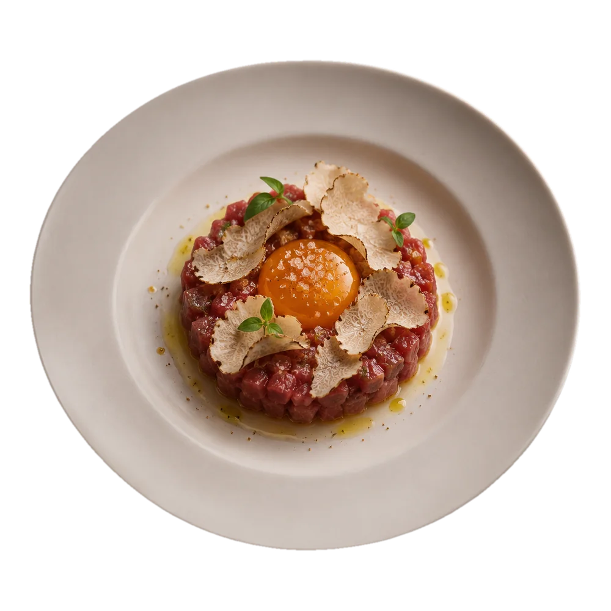
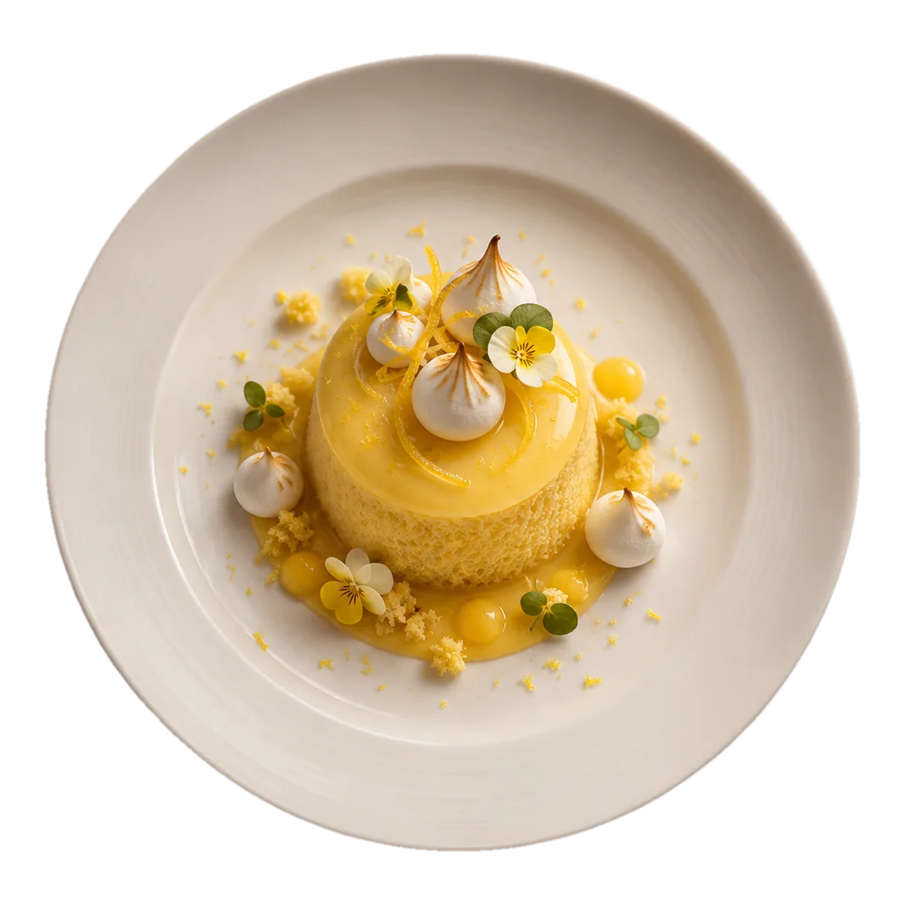
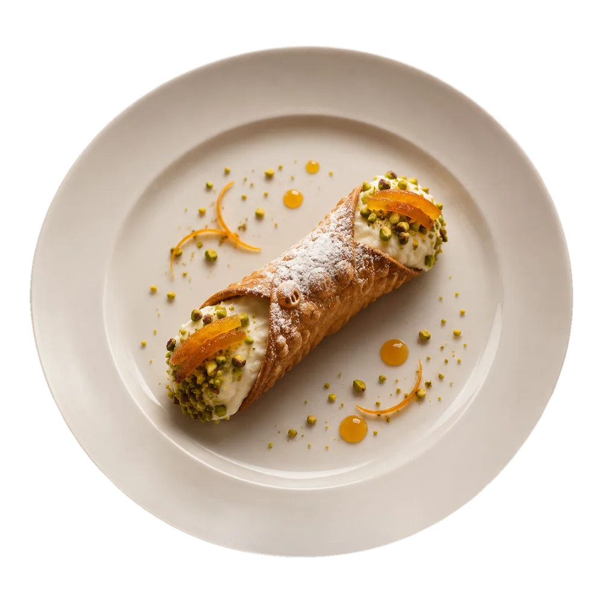

Italia
Eight courses from eight regions of Italy, served by candlelight in a lane off Bridge Street.
White truffle from Alba is shaved at the table until the end of December.
A small room, lit for eating
Italia seats thirty-two at walnut tables under a low brick vault. There are no screens and nothing louder than conversation. The candles are beeswax, poured for us in the Blue Mountains, and each one burns for exactly one dinner.
Head chef Lucia Marchetti grew up above her grandmother's trattoria in Modena. The menu is her map of the country: every course comes from a different region, cooked with Australian produce and the few things we still bring from Italy.
- Seats
- 32, with a private room for 12
- Dinner
- Wednesday to Saturday, from 6pm
- Lunch
- Friday and Saturday, from 12pm
- Cellar
- 1,400 bottles from all 20 regions
Il Viaggio
The tasting menu travels from the Ligurian coast to Palermo in eight courses. $245 per guest. Wine pairing $165, or $290 for the Riserva pairing.
-
Liguria
Gamberi rossi
Raw red prawns, basil oil, Taggiasca olives, sea salt.
Pairing: Vermentino, Riviera Ligure di Ponente 2023

-
Piemonte
Carne cruda, tartufo bianco
Hand-cut beef, cured egg yolk, white truffle shaved at the table.
Pairing: Nebbiolo, Langhe 2021
-
Lombardia
Riso, zafferano e oro
Carnaroli rice, saffron, a single leaf of gold.
Pairing: Franciacorta Satèn NV

-
Emilia-Romagna
Tortellini in brodo
Hand-folded tortellini, capon broth, Parmigiano Reggiano aged 36 months.
Pairing: Lambrusco di Sorbara 2023

-
Lazio
Carciofo alla giudia
Twice-fried artichoke, pecorino romano cream, wild mint.
Pairing: Frascati Superiore 2022

-
Toscana
Piccione, castagne
Roast pigeon, chestnut purée, Chianti Classico jus.
Pairing: Chianti Classico Gran Selezione 2019

-
Campania
Delizia al limone
Amalfi lemon sponge, lemon curd, small meringues.
Pairing: Falanghina passito 2020

-
Sicilia
Cannolo
Crisp shell, sheep's milk ricotta, Bronte pistachio, candied orange.
Pairing: Passito di Pantelleria 2019

From the cellar
Our sommelier, Tommaso Greco, keeps 1,400 bottles in the old coal cellar below the dining room. Six he would open tonight:
| Wine | Region | Vintage | Bottle |
|---|---|---|---|
| Franciacorta SatènCa' del Bosco | Lombardia | NV | $180 |
| Fiano di AvellinoCiro Picariello | Campania | 2022 | $120 |
| Etna RossoBenanti | Sicilia | 2021 | $140 |
| BaroloBartolo Mascarello | Piemonte | 2019 | $420 |
| Brunello di MontalcinoBiondi-Santi | Toscana | 2016 | $690 |
| Amarone della ValpolicellaGiuseppe Quintarelli | Veneto | 2015 | $980 |
Visit us
- Address
- 33 Bridge Lane, Sydney NSW 2000
- Phone
- (02) 5550 1946
- Dinner
- Wednesday to Saturday, 6pm until late
- Lunch
- Friday and Saturday, 12pm to 3pm